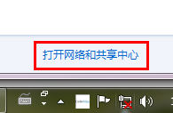
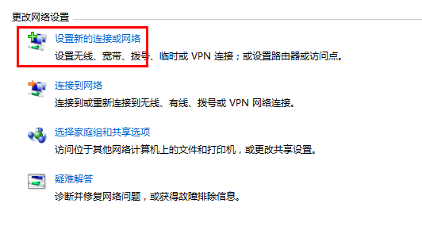
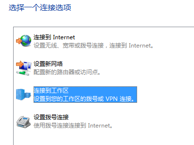
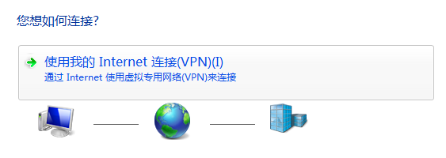
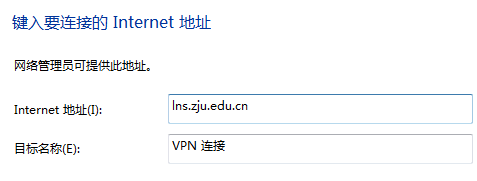
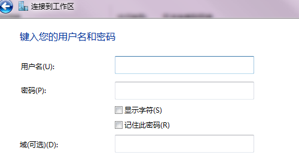
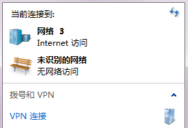
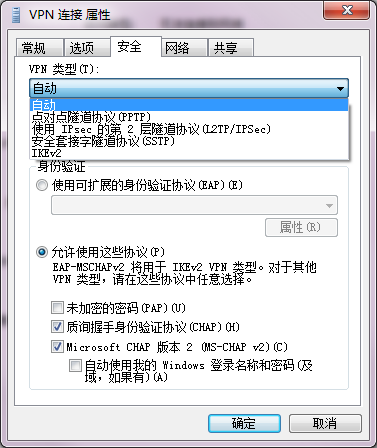

在申请好 VPN 帐号之后，就可以打开电脑登录浏览网页了。本文以 Windows7 为例，说明如何设置 VPN。
点击桌面右下方的网络连接图标，如下图：

在打开的窗口中，点击“设置新的连接或网络。



输入服务器地址：lns.zju.edu.cn
注意：可选的地址还有 10.5.1.7，10.5.1.5，10.5.1.9，如果发现网络不好，换个试试吧！

用户名密码就是你申请的 VPN 帐号了，新生都默认有一个帐号，用户名为学号，密码为身份证后六位

这时，再点开桌面右下角的网络图标，发现多了一个 VPN连接

先不急着连接，右键==>属性。选择安全选项卡，VPN类型设置为 L2TP，数据加密设置为 可选加密，然后连接应该就可以正常上网了！

Enjoy!